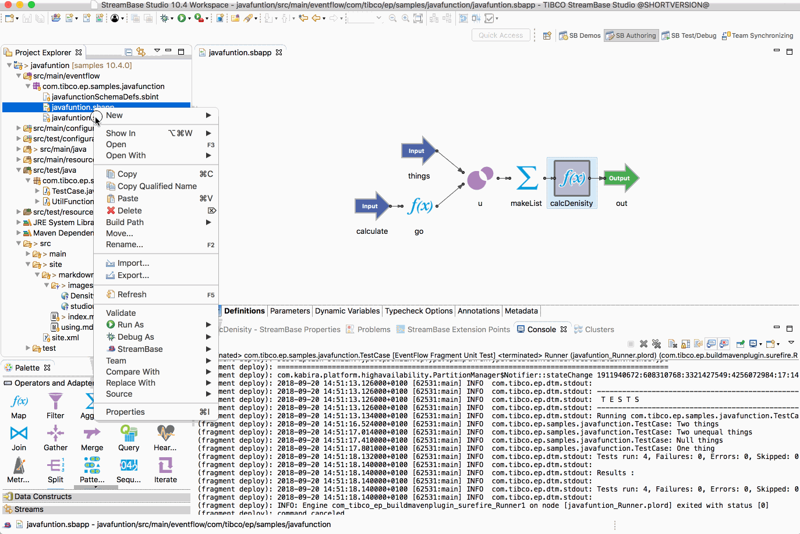
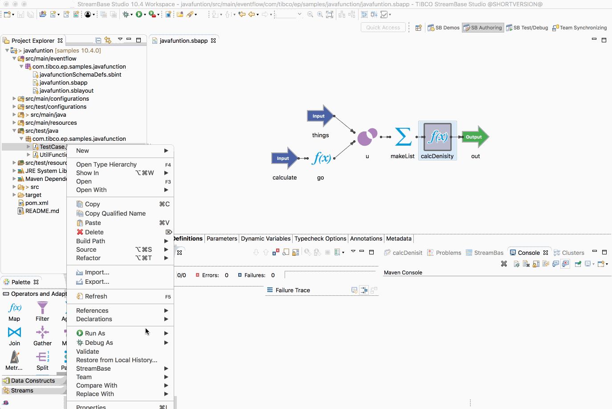
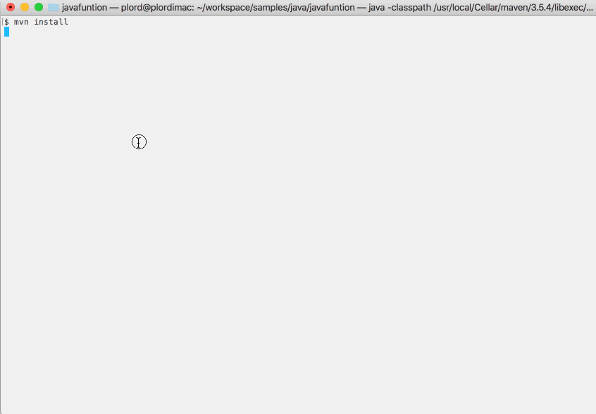

Java : Java Function
This sample describes how to use java functions in EventFlow.
Declare the java function
This sample uses the following java function :
/*******************************************************************************
*
* COPYRIGHT
* Copyright 2015, 2016 TIBCO Software Inc. ALL RIGHTS RESERVED.
* TIBCO Software Inc. Confidential Information
*
*******************************************************************************/
package com.tibco.ep.samples.javafunction;
import java.text.MessageFormat;
import java.util.List;
import com.streambase.sb.CompleteDataType;
import com.streambase.sb.DataType;
import com.streambase.sb.Schema;
import com.streambase.sb.StreamBaseException;
import com.streambase.sb.Tuple;
import com.streambase.sb.TupleException;
import com.streambase.sb.client.CustomFunctionResolver;
import com.streambase.sb.operator.TypecheckException;
/**
* Class for general-purpose utility functions that deal with Things
*/
public class UtilFunctions {
/**
* Thing schema
*/
protected static Schema ThingSchema = new Schema(null,
Schema.createField(DataType.STRING, "name"),
Schema.createField(DataType.DOUBLE, "width"),
Schema.createField(DataType.DOUBLE, "height"),
Schema.createField(DataType.DOUBLE, "depth"),
Schema.createField(DataType.DOUBLE, "weightKg"));
private static Schema.Field WIDTH;
private static Schema.Field HEIGHT;
private static Schema.Field DEPTH;
private static Schema.Field WEIGHTKG;
static {
try {
WIDTH = ThingSchema.getField("width");
HEIGHT = ThingSchema.getField("height");
DEPTH = ThingSchema.getField("depth");
WEIGHTKG = ThingSchema.getField("weightKg");
} catch (TupleException e) {
e.printStackTrace();
}
}
/**
* @param things tuples
* @return the avg density of a bunch of Things
*/
@CustomFunctionResolver("DensityCustomFunctionResolver0")
public static Double Density(List<Tuple> things) {
if(things == null || things.size() == 0)
return null;
double sumDensity = 0.0;
int numValidThings = 0;
Double density = null;
try {
for(Tuple t : things) {
if(!(t.isNull(WIDTH) || t.isNull(HEIGHT) || t.isNull(DEPTH) || t.isNull(WEIGHTKG))) {
double volume = Math.abs(t.getDouble(WIDTH) * t.getDouble(HEIGHT) * t.getDouble(DEPTH));
if(!t.isNull(WEIGHTKG) && volume > 0.0) {
sumDensity += t.getDouble(WEIGHTKG) / volume;
++numValidThings;
}
}
}
if(numValidThings > 0)
density = sumDensity / numValidThings;
} catch (StreamBaseException e) {
e.printStackTrace();
}
return density;
}
/**
* <p>
* A StreamBase Custom Function Resolver Function. This method is used by
* StreamBase for type checking. Use this method to resolve functions that
* take lists or tuples as arguments or return lists or tuples. This method
* should be used to ensure the data types of your function are correct.
* </p>
*
* <p>
* For custom functions that return simple types (the Java equivalents of
* the simple StreamBase types: int, long, double, bool, string, blob,
* timestamp), the returned CompleteDataType must be the appropriate
* corresponding simple type (e.g., as returned by
* CompleteDataType.forInt()). For custom functions that return non-simple
* types (the Java equivalents of the non-simple StreamBase types: tuple,
* list), the returned CompleteDataType must fully describe the appropriate
* non-simple type (as returned by CompleteDataType.forTuple(Schema) or
* CompleteDataType.forList(CompleteDataType))
* </p>
*
* @param things
* things
* @return datatype
*
* @see com.streambase.sb.client.CustomFunctionResolver
*/
public static CompleteDataType DensityCustomFunctionResolver0(CompleteDataType things) {
if(!things.equals(CompleteDataType.forList(CompleteDataType.forTuple(ThingSchema)))) {
throw new Error(new TypecheckException(MessageFormat.format("Expected list of {0}, got {1}", ThingSchema, things)));
}
return CompleteDataType.forDouble();
}
}
Provide a HOCON configuration for EventFlow use
A HOCON configuration is required to declare the functions available :
name = "sbapp-calls-java-engine"
version = "1.0.0"
type = "com.tibco.ep.streambase.configuration.sbengine"
configuration =
{
StreamBaseEngine =
{
streamBase =
{
pluginFunctions =
{
java =
{
Density =
{
type = "simple"
alias = "density"
className = "com.tibco.ep.samples.javafunction.UtilFunctions"
autoArguments = true
}
}
}
}
}
}
Running this sample from TIBCO StreamBase Studio™
Use the Run As -> EventFlow Fragment menu option to run in TIBCO StreamBase Studio™, and then enqueue test messages :

Building this sample from TIBCO StreamBase Studio™ and running the unit test cases
Use the Run As -> EventFlow Fragment Unit Test menu option to build from TIBCO StreamBase Studio™ :

Building this sample from the command line and running the unit test cases
Use the maven as mvn install to build from the command line or Continuous Integration system :
